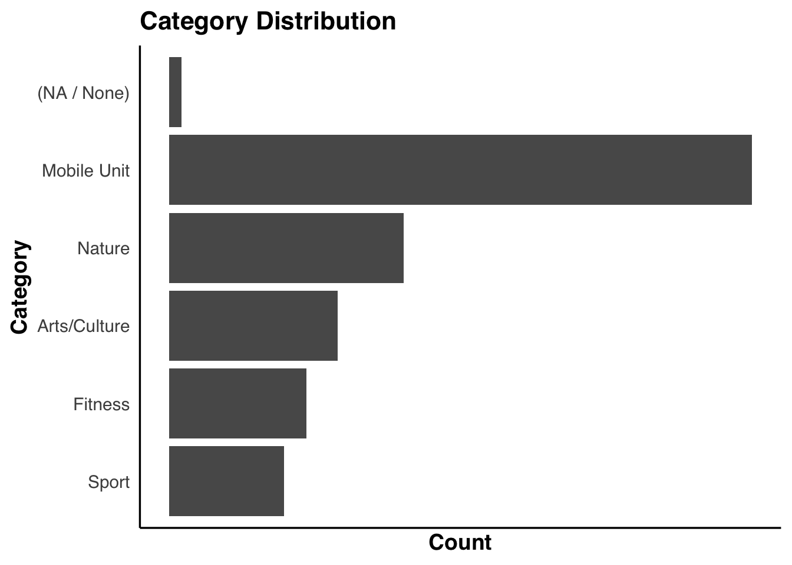

Code
library(ggplot2)
library(dplyr)
library(forcats)
library(lubridate)
library(stringr)
df <- read.csv("Parks_Special_Events_20251027.csv")
df <- df |>
filter(LocationType == "Park")
# head(df)Then we turned to NYC Open Data and identified the Parks Special Events dataset, published by the Department of Parks and Recreation (DPR). This dataset is available as a CSV file and is officially updated on a monthly basis, although the underlying records may change more frequently (approximately weekly). In addition, newly recorded events appear in the public portal with about a one-month delay.
We downloaded the data from: https://data.cityofnewyork.us/Recreation/Parks-Special-Events/6v4b-5gp4/about_data.
library(ggplot2)
library(dplyr)
library(forcats)
library(lubridate)
library(stringr)
df <- read.csv("Parks_Special_Events_20251027.csv")
df <- df |>
filter(LocationType == "Park")
# head(df)The data set contains 20.8k rows and 13 columns. Its main dimensions include Unit, Date and Time, Borough, Location, Event Type, Category, Classification, Attendance, Audience and so on.
To enhance the spatial component of our analysis, we incorporated a second dataset from NYC Open Data: Parks Properties. This dataset provides detailed geographic boundaries for every park in the form of multipolygon.
We downloaded the data from: https://data.cityofnewyork.us/Recreation/Parks-Properties/enfh-gkve/about_data.
parks <- read.csv("Parks_Properties_20251209.csv")
# head(parks)By linking park names across the two datasets, these geometries allow us to locate each event spatially and generate higher-resolution maps—such as centroid-based hexbin visualizations—that go beyond a coarse borough-level view.
theme_edav <- function(base_size = 14, base_family = "Helvetica") {
theme_minimal(base_size = base_size, base_family = base_family) +
theme(
panel.grid = element_blank(),
axis.line = element_line(color = "black", linewidth = 0.6),
axis.title = element_text(face = "bold"),
plot.title = element_text(face = "bold", size = base_size + 2),
legend.key.height = unit(0.6, "cm"),
legend.key.width = unit(0.6, "cm"),
legend.title = element_text(face = "bold"),
panel.border = element_blank()
)
}
theme_set(theme_edav())get_top5 <- function(df, var_name, label_name){
df |>
filter(!is.na(.data[[var_name]])) |>
count(.data[[var_name]], name = "n") |>
arrange(desc(n)) |>
slice_head(n = 5) |>
mutate(
item = .data[[var_name]],
group = label_name
) |>
select(group, item, n)
}
df_top_unit <- get_top5(df, "Unit", "Unit")
df_top_event <- get_top5(df, "Event.Type", "Event Type")
df_top_aud <- get_top5(df, "Audience", "Audience")
df_top_all <- bind_rows(df_top_unit, df_top_event, df_top_aud)
ggplot(df_top_all,
aes(x = reorder(item, n), y = n)) +
geom_col() +
coord_flip() +
facet_wrap(~ group, ncol = 1, scales = "free_y") +
labs(
title = "Top 5 Categories in Units, EventTypes, Audience",
x = "Category",
y = "Count"
) +
theme_edav() +
theme(
axis.text.x = element_blank(),
axis.ticks.x = element_blank()
)
This figure shows that Unit, Event Type, and especially Audience contain a large share of NA or blank values. Because so many records lack valid entries, the apparent counts are driven as much by missing data as by real patterns. As a result, these variables are not reliable enough to support substantive analysis in the rest of the project.
df_year_count <- df |>
mutate(year = year(mdy_hms(Date.and.Time))) |>
count(year, name = "year_count") |>
arrange(year_count)
head(df_year_count, 4) year year_count
1 2002 1
2 2017 25
3 2025 402
4 2024 536The year 2002 is clearly a data-entry error, as it is impossible for the dataset to contain only that single year. Likewise, the records for 2017 are too sparse to be considered reliable, so both years are removed from analysis.
df_cat_counts <- df |>
mutate(
value_clean = case_when(
is.na(Category) |
str_trim(Category) == "" |
Category == "--None--" ~ "(NA / None)",
TRUE ~ Category
)
) |>
count(value_clean, name = "n")
non_na_top <- df_cat_counts |>
filter(value_clean != "(NA / None)") |>
arrange(desc(n)) |>
slice_head(n = 5)
non_na_levels <- non_na_top |>
arrange(n) |>
pull(value_clean)
levels_order <- c(non_na_levels, "(NA / None)")
df_cat_top <- df_cat_counts |>
filter(value_clean %in% levels_order) |>
mutate(
value_clean = factor(value_clean, levels = levels_order)
)
ggplot(df_cat_top,
aes(x = value_clean, y = n)) +
geom_col() +
coord_flip() +
labs(
title = "Category Distribution",
x = "Category",
y = "Count"
) +
theme_edav() +
theme(
axis.text.x = element_blank(),
axis.ticks.x = element_blank()
)
The distribution plot shows that the number of missing or blank entries in Category is extremely small. Because nearly all events are assigned a valid category, this variable can be considered reliable and suitable for use in the subsequent analysis.
Given the overall data quality and the analytic goals of this project, the study will primarily rely on a set of variables that are both consistently recorded and conceptually meaningful. These include Date and Time, which anchor the temporal patterns; Borough, which provides spatial context; and Category together with Classification, which describe the nature and content of each event. Attendance is also retained as an important indicator of public engagement.
Together, these variables offer a stable and interpretable foundation for uncovering the rhythms and dynamics of NYC park events.